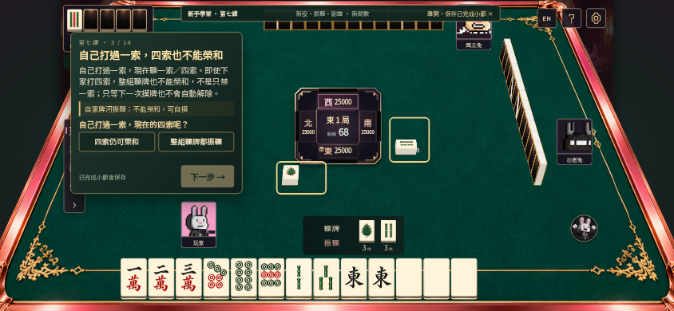
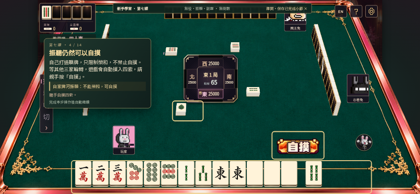
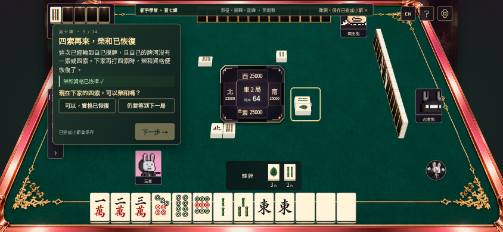
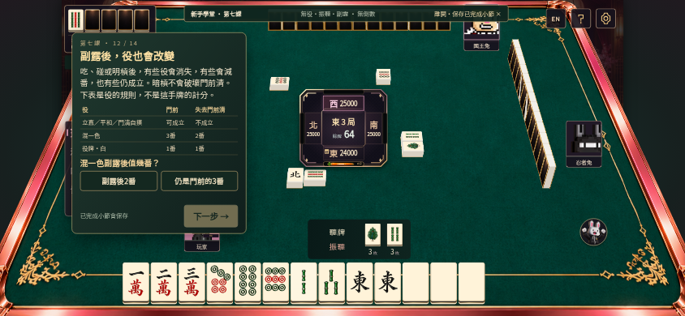

BUNNY ACADEMY · COURSE 07為甚麼不能和？
四個固定例子，用真正的榮和、跳過、摸牌及自摸流程，分清無役和三種振聽。側邊提示讓開真正要看的牌。
進入第七課 →01｜自己打過一索，四索也不能榮和
振聽影響整組聽牌，不只自己打過的那一張；但仍可親手自摸。


02｜親手跳過，等自己摸牌後再比較
未立直放過一索，下一家的四索不能榮和；自己摸九索、打出後，下家四索的榮和資格恢復。

03｜立直後放過，摸牌也不會解除
實際支付立直棒，親手跳過一索；一圈後九索已摸切，仍不能榮和四索。本局仍可自摸。
04｜副露後，役也會改變
比較門前限定、食下減番及不減番的役，並用小測驗確認理解。

首次完成100本機體驗紅蘿蔔。下一課：出牌與防守入門；第九課：上桌前的實戰練習。